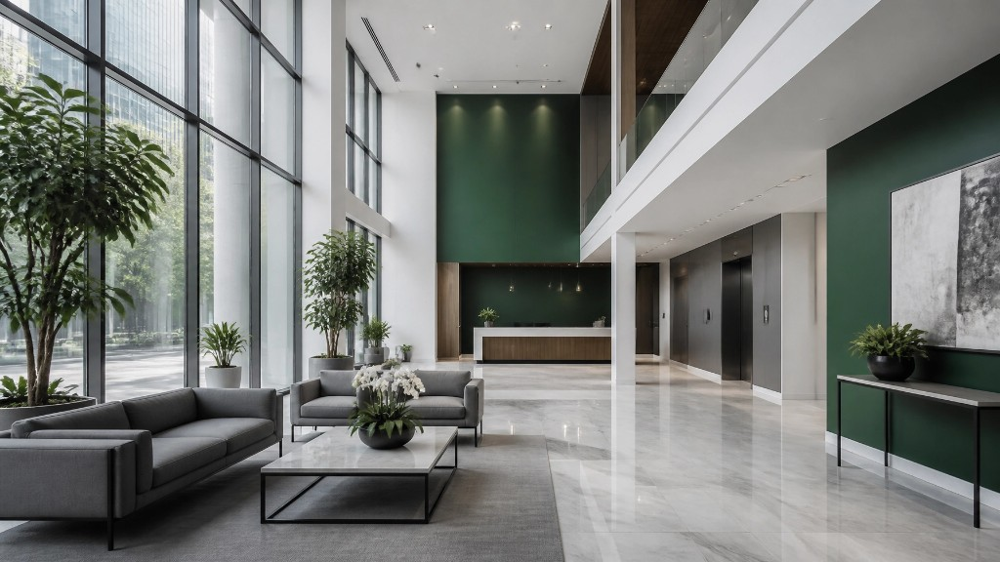

Up to 30%
Cooling energy
Multi-site restaurant estate
Proof on site
Real sites, real measurement. We only publish outcomes we can stand behind.
Up to 30%
Cooling energy
Multi-site restaurant estate
Up to 15%
Refrigeration
Food ingredients manufacturer
Up to 15%
Gas heating
Pub and dining operator
Up to 18%
Waste energy
Mixed-load commercial property
“We had seen audit reports before — this was different. Ranked actions, payback logic and a measurement plan our ops team could run with.”

Hospitality · Air conditioning
Up to 30%
Cooling energy reduction
Challenge High cooling energy across a branded restaurant estate with inconsistent plant settings.
What we did Site discovery, refrigeration and cooling optimisation assessment, ranked roadmap with measurement plan.
Result Up to 30% cooling energy reduction on suitable sites — verified against baseline meter data and operating hours.
Onsite Discovery Assessment Refrigeration & cooling Why refrigeration runs 24/7

Manufacturing · Refrigeration
Up to 15%
Refrigeration energy reduction
Challenge Significant refrigeration load with limited visibility into plant-level performance.
What we did Load profiling, refrigeration suitability assessment, operational tuning recommendations.
Result Up to 15% refrigeration energy reduction — measured against agreed baseline period post-implementation.
Discovery Assessment Report and Roadmap Refrigeration solutions How to prove savings
Hospitality · Heating
Up to 15%
Gas energy cost saving
Challenge Rising gas costs across a mixed estate of wet-led and food-led sites.
What we did Heating circuit review, EndoTherm suitability testing, operational quick wins prioritised in roadmap.
Result Up to 15% gas energy cost saving on closed-circuit heating where conditions suited — verified via degree-day normalised consumption.
EndoTherm & heating solutions Start with discovery Our services
Mixed commercial · Power quality
Up to 18%
Waste energy reduction
Challenge Mixed electrical loads with unexplained waste and power quality issues.
What we did Whole-site power quality assessment, FilterPro suitability review, measurement route agreed upfront.
Result Up to 18% reduction in waste energy on suitable mixed-load profile — verified against pre-installation monitoring data.
FilterPro & power quality Energy Optimisation as a Service How to prove savings